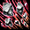

2020/02/19～ メイド スキル一覧
メイドスキル改変後のデータ。
2020/02/19 状態異常に伴うスキル改変後のデータ。
[覚醒スキル]
| ブルームスイング | ||||||||||||||
|---|---|---|---|---|---|---|---|---|---|---|---|---|---|---|
| スキル難易度 | 1 | |||||||||||||
| 必要スキル |
なし
|
|||||||||||||
| スキル説明 |
単体対象に向かってほうきを振り回す。 |
|||||||||||||
| レベル | 1 | 2 | 3 | 4 | 5 | 6 | 7 | 8 | 9 | 10 | 20 | 30 | 40 | 50 |
| 消費CP | 0 | |||||||||||||
| 獲得CP | 2.4 | 2.8 | 3.2 | 3.6 | 4 | 4.4 | 4.8 | 5.2 | 5.6 | 6 | 10 | 14 | 18 | 22 |
| 物理ダメージ | 2% | 4% | 6% | 8% | 10% | 12% | 14% | 16% | 18% | 20% | 40% | 60% | 80% | 100% |
| 攻撃速度 | 0.5% | 1% | 1.5% | 2% | 2.5% | 3% | 3.5% | 4% | 4.5% | 5% | 10% | 15% | 20% | 25% |
| ヘビーブルーム | ||||||||||||||
|---|---|---|---|---|---|---|---|---|---|---|---|---|---|---|
| スキル難易度 | 2 | |||||||||||||
| 必要スキル | ブルームダスティング[3] | |||||||||||||
| スキル説明 | 単体対象にほうきを振り下ろして攻撃し、 途中で転んで前方範囲内の敵にもダメージを与える。 | |||||||||||||
| レベル | 1 | 2 | 3 | 4 | 5 | 6 | 7 | 8 | 9 | 10 | 20 | 30 | 40 | 50 |
| 消費CP | 11 | 12 | 13 | 14 | 15 | 16 | 17 | 18 | 19 | 20 | 30 | 40 | 50 | 60 |
| 獲得CP | 2 | 4 | 6 | 8 | 10 | 12 | 14 | 16 | 18 | 20 | 40 | 60 | 80 | 100 |
| 物理ダメージ | 56% | 62% | 68% | 74% | 80% | 86% | 92% | 98% | 104% | 110% | 170% | 230% | 290% | 350% |
| 爆発範囲(m) | 1.5 | |||||||||||||
| 燃えるほこり | ||||||||||||||
|---|---|---|---|---|---|---|---|---|---|---|---|---|---|---|
| スキル難易度 | 1 | |||||||||||||
| 必要スキル |
なし |
|||||||||||||
| スキル説明 | 敵に炎ダメージを与える。 | |||||||||||||
| レベル | 1 | 2 | 3 | 4 | 5 | 6 | 7 | 8 | 9 | 10 | 20 | 30 | 40 | 50 |
| 消費CP | 0 | |||||||||||||
| 獲得CP | 4.3 | 4.6 | 4.9 | 5.2 | 5.5 | 5.8 | 6.1 | 6.4 | 6.7 | 7 | 10 | 13 | 16 | 19 |
| 物理ダメージ | 無し | |||||||||||||
| 炎最小ダメ | 1 | 3 | 5 | 7 | 9 | 11 | 13 | 15 | 17 | 19 | 39 | 59 | 79 | 99 |
| 炎最大ダメ | 3 | 5 | 7 | 9 | 11 | 13 | 15 | 17 | 19 | 21 | 41 | 61 | 81 | 101 |
| 命中率補正(%) | 0.1% | 0.2% | 0.3% | 0.4% | 0.5% | 0.6% | 0.7% | 0.8% | 0.9% | 1% | 2% | 3% | 4% | 5% |
| シューティングダスト | ||||||||||||||
|---|---|---|---|---|---|---|---|---|---|---|---|---|---|---|
| スキル難易度 | 3 | |||||||||||||
| 必要スキル |
ブルームスイング[5]
|
|||||||||||||
| スキル説明 |
単体対象にほうきを掃き上げて攻撃する。 ホコリを浴びた対象は一定確率で混乱にかかる。 |
|||||||||||||
| レベル | 1 | 2 | 3 | 4 | 5 | 6 | 7 | 8 | 9 | 10 | 20 | 30 | 40 | 50 |
| 消費CP | 10.5 | 11 | 11.5 | 12 | 12.5 | 13 | 13.5 | 14 | 14.5 | 15 | 20 | 25 | 30 | 35 |
| 獲得CP | 16.5 | 18 | 19.5 | 21 | 22.5 | 24 | 25.5 | 27 | 28.5 | 30 | 45 | 60 | 75 | 90 |
| 物理ダメージ | 14% | 18% | 22% | 26% | 30% | 34% | 38% | 42% | 46% | 50% | 90% | 130% | 170% | 210% |
| 混乱確率 | 100% | |||||||||||||
| 混乱持続時間 | 2秒 | |||||||||||||
| クールタイム | PVP時12秒 | |||||||||||||
| ネープルスウェーブ | ||||||||||||||
|---|---|---|---|---|---|---|---|---|---|---|---|---|---|---|
| スキル難易度 | 4 | |||||||||||||
| 必要スキル |
ブルームスイング[5] シューティングダスト[3]
|
|||||||||||||
| スキル説明 |
メイドが内なる魔法の力で燃える皿を召喚、敵に投げつけて火炎ダメージを与える。 |
|||||||||||||
| レベル | 1 | 2 | 3 | 4 | 5 | 6 | 7 | 8 | 9 | 10 | 20 | 30 | 40 | 50 |
| 消費CP | 24 | 28 | 32 | 36 | 40 | 44 | 48 | 52 | 56 | 60 | 100 | 140 | 180 | 220 |
| 獲得CP | 2 | 4 | 6 | 8 | 10 | 12 | 14 | 16 | 18 | 20 | 40 | 60 | 80 | 100 |
| 物理ダメージ | 無し | |||||||||||||
| 炎最小ダメージ | 15 | 20 | 25 | 30 | 35 | 40 | 45 | 50 | 55 | 60 | 110 | 160 | 210 | 260 |
| 炎最大ダメージ | 25 | 30 | 35 | 40 | 45 | 50 | 55 | 60 | 65 | 70 | 120 | 170 | 220 | 270 |
| 射程距離 | 5(m) | |||||||||||||
| 持続時間 | 2(秒) | |||||||||||||
| 適用サイクル | 0.5(秒) | |||||||||||||
| 攻撃範囲 | 3.5(m) | |||||||||||||
| ブルームアサルト | ||||||||||||||
|---|---|---|---|---|---|---|---|---|---|---|---|---|---|---|
| スキル難易度 | 2 | |||||||||||||
| 必要スキル |
ブルームスイング[7]
|
|||||||||||||
| スキル説明 |
ほうきを地面にかけながら突撃する。 動線上のすべての敵にダメージを与えると同時に後ろにノックバックする。 |
|||||||||||||
| レベル | 1 | 2 | 3 | 4 | 5 | 6 | 7 | 8 | 9 | 10 | 20 | 30 | 40 | 50 |
| 消費CP | 15.8 | 16.6 | 17.4 | 18.2 | 19 | 19.8 | 20.6 | 21.4 | 22.2 | 23 | 31 | 39 | 47 | 55 |
| 獲得CP | 1 | 2 | 3 | 4 | 5 | 6 | 7 | 8 | 9 | 10 | 20 | 30 | 40 | 50 |
| 物理ダメージ | 2% | 4% | 6% | 8% | 10% | 12% | 14% | 16% | 18% | 20% | 40% | 60% | 80% | 100% |
| 敵ノックバック距離 | 0.75m | |||||||||||||
| クールタイム | PVP時4秒 | |||||||||||||
| エクストリーム ブルームラッシュ | ||||||||||||||
|---|---|---|---|---|---|---|---|---|---|---|---|---|---|---|
| スキル難易度 | 3 | |||||||||||||
| 必要スキル |
ヘビーブルーム[9] ブルームアサルト[7]
|
|||||||||||||
| スキル説明 | ほうきをかけながら突撃する。対象の前で転んで、 その衝撃で範囲内のすべての敵にダメージを与えてマヒさせる。 | |||||||||||||
| レベル | 1 | 2 | 3 | 4 | 5 | 6 | 7 | 8 | 9 | 10 | 20 | 30 | 40 | 50 |
| 消費CP | 21.2 | 22.4 | 23.6 | 24.8 | 26 | 27.2 | 28.4 | 29.6 | 30.8 | 32 | 44 | 56 | 68 | 80 |
| 獲得CP | 1 | 2 | 3 | 4 | 5 | 6 | 7 | 8 | 9 | 10 | 20 | 30 | 40 | 50 |
| 物理ダメージ | 58% | 66% | 74% | 82% | 90% | 98% | 106% | 114% | 122% | 130% | 210% | 290% | 370% | 450% |
| 敵麻痺確率 | 100% | |||||||||||||
| 敵麻痺時間 | 3秒 | |||||||||||||
| 爆発範囲(m) | 2m | |||||||||||||
| クールタイム | 25秒 | |||||||||||||
| カオスクリーニング | ||||||||||||||
|---|---|---|---|---|---|---|---|---|---|---|---|---|---|---|
| スキル難易度 | 3 | |||||||||||||
| 必要スキル |
ネープルスウェーブ[5] ブルームアサルト[6]
|
|||||||||||||
| スキル説明 | 運によって致命打攻撃を回避した場合、一定確率で敵をマヒ状態にする。 | |||||||||||||
| レベル | 1 | 2 | 3 | 4 | 5 | 6 | 7 | 8 | 9 | 10 | 20 | 30 | 40 | 50 |
| 消費CP | 1.5 | 2 | 2.5 | 3 | 3.5 | 4 | 4.5 | 5 | 5.5 | 6 | 11 | 16 | 21 | 26 |
| 獲得CP | 0 | |||||||||||||
| 敵麻痺確率 | 10.1% | 10.2% | 10.3% | 10.4% | 10.5% | 10.6% | 10.7% | 10.8% | 10.9% | 11.0% | 12.0% | 13.0% | 14.0% | 15.0% |
| 上限 | 敵麻痺確率は最大30% | |||||||||||||
| 敵麻痺時間 | 2秒 | |||||||||||||
| 潔癖の乙女 | ||||||||||||||
|---|---|---|---|---|---|---|---|---|---|---|---|---|---|---|
| スキル難易度 | 4 | |||||||||||||
| 必要スキル |
エクストリームブルームラッシュ[5] カオスクリーニング[15]
|
|||||||||||||
| スキル説明 |
追加回避確率が永久的に増加。 |
|||||||||||||
| レベル | 1 | 2 | 3 | 4 | 5 | 6 | 7 | 8 | 9 | 10 | 20 | 30 | 40 | 50 |
| 回避確率(Max 8％) | 1% | 1.1% | 1.2% | 1.3% | 1.4% | 1.5% | 1.6% | 1.7% | 1.8% | 1.9% | 2.9% | 3.9% | 4.9% | 5.9% |
| パーフェクトクリーニング | ||||||||||||||
|---|---|---|---|---|---|---|---|---|---|---|---|---|---|---|
| スキル難易度 | 5 | |||||||||||||
| 必要スキル |
ブルームアサルト[9] エクストリームブルームラッシュ[12]
掃除の邪魔しちゃダメ[10]
|
|||||||||||||
| スキル説明 | ほうきの棒の部分を突き出して連続で突き出しながら突進する。 | |||||||||||||
| レベル | 1 | 2 | 3 | 4 | 5 | 6 | 7 | 8 | 9 | 10 | 20 | 30 | 40 | 50 |
| 消費CP | 57 | 59 | 61 | 63 | 65 | 67 | 69 | 71 | 73 | 75 | 95 | 115 | 135 | 155 |
| 獲得CP | 1 | 2 | 3 | 4 | 5 | 6 | 7 | 8 | 9 | 10 | 20 | 30 | 40 | 50 |
| 物理ダメージ | 82% | 89% | 96% | 103% | 110% | 117% | 124% | 131% | 138% | 145% | 215% | 285% | 355% | 425% |
| 攻撃回数(Max 4) | 1 | 1 | 1 | 1 | 1 | 1 | 1 | 1 | 1 | 1 | 1 | 2 | 2 | 3 |
| 移動速度 | 2.2% | 2.4% | 2.6% | 2.8% | 3% | 3.2% | 3.4% | 3.6% | 3.8% | 4% | 6% | 8% | 10% | 12% |
| クールタイム(秒) | 3 | |||||||||||||
| 備考 | 敵はブロック不可 | |||||||||||||
|  | ダストインパクト | |||||||||||||
|---|---|---|---|---|---|---|---|---|---|---|---|---|---|---|
| スキル難易度 | 2 | |||||||||||||
| 必要スキル |
シューティングダスト[5] カオスクリーニング[10]
|
|||||||||||||
| スキル説明 |
ほうきで地面を強くたたき、
石などを前方一直線に飛ばして敵を吹き飛ばしマヒさせる。 ダメージを受けた敵は移動速度が減少。 |
|||||||||||||
| レベル | 1 | 2 | 3 | 4 | 5 | 6 | 7 | 8 | 9 | 10 | 20 | 30 | 40 | 50 |
| 消費CP | 32 | 34 | 36 | 38 | 40 | 42 | 44 | 46 | 48 | 50 | 70 | 90 | 110 | 130 |
| 獲得CP | 3 | 6 | 9 | 12 | 15 | 18 | 21 | 24 | 27 | 30 | 60 | 90 | 120 | 150 |
| 物理ダメージ | 53% | 56% | 59% | 62% | 65% | 68% | 71% | 74% | 77% | 80% | 110% | 140% | 170% | 200% |
| ノックバック確率 | 100% | |||||||||||||
| ノックバック距離 | 1.5m | |||||||||||||
| 移動速度低下量 | -10% | -10.2% | -10.4% | -10.6% | -10.8% | -11% | -11.2% | -11.4% | -11.6% | -11.8% | -13.8% | -15.8% | -17.8% | -19.8% |
| 低下持続時間 | 5秒 | |||||||||||||
| 上限 | 速度低下量は最大30%まで | |||||||||||||
| 掃除の邪魔しちゃダメ | ||||||||||||||
|---|---|---|---|---|---|---|---|---|---|---|---|---|---|---|
| スキル難易度 | 4 | |||||||||||||
| 必要スキル |
ブルームスイング[10] ブルームダスティング[10]
シューティングダスト[7] ネープルスウェーブ[5]
|
|||||||||||||
| スキル説明 | 掃除を邪魔する対象をほうきの棒の部分で連続で突く。 | |||||||||||||
| レベル | 1 | 2 | 3 | 4 | 5 | 6 | 7 | 8 | 9 | 10 | 20 | 30 | 40 | 50 |
| 消費CP | 60 | 65 | 70 | 75 | 80 | 85 | 90 | 95 | 100 | 105 | 155 | 205 | 255 | 305 |
| 獲得CP | 2 | 4 | 6 | 8 | 10 | 12 | 14 | 16 | 18 | 20 | 40 | 60 | 80 | 100 |
| 物理ダメージ | -13% | -6% | 1% | 8% | 15% | 22% | 29% | 36% | 43% | 50% | 120% | 190% | 260% | 330% |
| 攻撃回数(最大12) | 2 | 2 | 2 | 2 | 2 | 2 | 2 | 3 | 3 | 3 | 3 | 4 | 4 | 5 |
| 備考 |
最大4フレ、SLｖ119付近で最大12本に変更。 |
|||||||||||||
| 備考２ | 追加打撃形式に変更(追加打撃にはストリップドレスの効果が乗らない) | |||||||||||||
| スローイングディッシュ | ||||||||||||||
|---|---|---|---|---|---|---|---|---|---|---|---|---|---|---|
| スキル難易度 | 3 | |||||||||||||
| 必要スキル |
ブルームスイング[7] ブルームダスティング[8]
ネープルスウェーブ[2]
|
|||||||||||||
| スキル説明 | 対象にお皿を投げて攻撃する。 お皿が一定回数、敵の間で跳ね返りながら攻撃する。 | |||||||||||||
| レベル | 1 | 2 | 3 | 4 | 5 | 6 | 7 | 8 | 9 | 10 | 20 | 30 | 40 | 50 |
| 消費CP | 15 | 18 | 21 | 24 | 27 | 30 | 33 | 36 | 39 | 42 | 72 | 102 | 132 | 162 |
| 獲得CP | 7 | 9 | 11 | 13 | 15 | 17 | 19 | 21 | 23 | 25 | 45 | 65 | 85 | 105 |
| 物理ダメージ | 7.5% | 10% | 12.5% | 15% | 17.5% | 20% | 22.5% | 25% | 27.5% | 30% | 55% | 80% | 105% | 130% |
| 反射回数 | 2 | 2 | 2 | 2 | 3 | 3 | 3 | 3 | 3 | 3 | 4 | 5 | 6 | 7 |
| 射程距離 | 4.5m | |||||||||||||
| ブルームスパイラル | ||||||||||||||
|---|---|---|---|---|---|---|---|---|---|---|---|---|---|---|
| スキル難易度 | 4 | |||||||||||||
| 必要スキル |
シューティングダスト[6] カオスクリーニング[11]
ダストインパクト[5] スローイングディッシュ[5]
|
|||||||||||||
| スキル説明 |
ほうきを回転させながら前方に投げて範囲内の敵にダメージを与える。 |
|||||||||||||
| レベル | 1 | 2 | 3 | 4 | 5 | 6 | 7 | 8 | 9 | 10 | 20 | 30 | 40 | 50 |
| 消費CP | 20 | 25 | 30 | 35 | 40 | 45 | 50 | 55 | 60 | 65 | 115 | 165 | 215 | 265 |
| 物理ダメージ | 削除 | |||||||||||||
| 炎最小ダメ | 10 | 18 | 26 | 34 | 42 | 50 | 58 | 66 | 74 | 82 | 162 | 242 | 322 | 402 |
| 炎最大ダメ | 30 | 38 | 46 | 54 | 62 | 70 | 78 | 86 | 94 | 102 | 182 | 262 | 342 | 422 |
| 持続時間 | 3秒 | |||||||||||||
| 打撃周期 | 0.5秒 | |||||||||||||
| クールタイム | 3秒 | |||||||||||||
| 打撃範囲 | 1.5(m) | |||||||||||||
| 射程距離 | 5(m) | |||||||||||||
| マッドラッシュ | ||||||||||||||
|---|---|---|---|---|---|---|---|---|---|---|---|---|---|---|
| スキル難易度 | 5 | |||||||||||||
| 必要スキル |
ブルームスイング[10] ブルームダスティング[11]
ネープルスウェーブ[12] スローイングディッシュ[10]
|
|||||||||||||
| スキル説明 | 狂気に満ちたメイドが色々な種類の家事道具を投げて 周辺のすべての敵にダメージを与える。 | |||||||||||||
| レベル | 1 | 2 | 3 | 4 | 5 | 6 | 7 | 8 | 9 | 10 | 20 | 30 | 40 | 50 |
| 消費CP | 60 | 65 | 70 | 75 | 80 | 85 | 90 | 95 | 100 | 105 | 155 | 205 | 255 | 305 |
| 獲得CP | 4 | 8 | 12 | 16 | 20 | 24 | 28 | 32 | 36 | 40 | 80 | 120 | 160 | 200 |
| 物理ダメージ | 7.5% | 15% | 22.5% | 30% | 37.5% | 45% | 52.5% | 60% | 67.5% | 75% | 150% | 225% | 300% | 375% |
| 攻撃速度補正 | 0% | |||||||||||||
| 射程距離 | 3m(キャラクターを中心に発動) | |||||||||||||
| 同時攻撃数 | システム最大値まで可能 | |||||||||||||
| 攻撃回数(Max 8) | 2.04 | 2.08 | 2.12 | 2.16 | 2.2 | 2.24 | 2.28 | 2.32 | 2.36 | 2.4 | 2.8 | 3.2 | 3.6 | 4 |
| インサイト | ||||||||||||||
|---|---|---|---|---|---|---|---|---|---|---|---|---|---|---|
| スキル難易度 | 3 | |||||||||||||
| 必要スキル |
ブルームスイング[3] ブルームダスティング[5]
|
|||||||||||||
| スキル説明 | メイドの鋭い洞察力で敵の弱点を把握し、ダブルクリティカル時、 一定確率でダメージを増加させる。 | |||||||||||||
| レベル | 1 | 2 | 3 | 4 | 5 | 6 | 7 | 8 | 9 | 10 | 20 | 30 | 40 | 50 |
| 1秒当たりの消費CP | 1.1 | 1.3 | 1.5 | 1.7 | 1.9 | 2.1 | 2.3 | 2.5 | 2.7 | 2.9 | 4.9 | 6.9 | 8.9 | 10 |
| 獲得CP | 0 | |||||||||||||
| ダブクリ時ダメージ増加量 | 4.2 | 4.4 | 4.6 | 4.8 | 5 | 5.2 | 5.4 | 5.6 | 5.8 | 6 | 8 | 10 | 12 | 14 |
| 発動確率(max 50%) | 5.5 | 6 | 6.5 | 7 | 7.5 | 8 | 8.5 | 9 | 9.5 | 10 | 15 | 20 | 25 | 30 |
| ストリップドレス | ||||||||||||||
|---|---|---|---|---|---|---|---|---|---|---|---|---|---|---|
| スキル難易度 | 2 | |||||||||||||
| 必要スキル |
ブルームスイング[6] シューティングダスト[8]
|
|||||||||||||
| スキル説明 | 巧みな手さばきで対象の衣服や鎧などを一瞬で脱がし、 対象に一定確率で追加の火炎ダメージを与える。 | |||||||||||||
| レベル | 1 | 2 | 3 | 4 | 5 | 6 | 7 | 8 | 9 | 10 | 20 | 30 | 40 | 50 |
| 1秒当たりの消費CP | 1.1 | 1.3 | 1.5 | 1.7 | 1.9 | 2.1 | 2.3 | 2.5 | 2.7 | 2.9 | 4.9 | 6.9 | 8.9 | 10.9 |
| 火最小ダメ | 30.5 | 32 | 33.5 | 35 | 36.5 | 38 | 39.5 | 41 | 42.5 | 44 | 59 | 74 | 89 | 104 |
| 火最大ダメ | 34.5 | 36 | 37.5 | 39 | 40.5 | 42 | 43.5 | 45 | 46.5 | 48 | 63 | 78 | 93 | 108 |
| 発動確率 | 20.5% | 21% | 21.5% | 22% | 22.5% | 23% | 23.5% | 24% | 24.5% | 25% | 30% | 35% | 40% | 45% |
| 備考 | 一部スキルにて効果が1発しか乗らないとの報告あり。 火ダメージはステータスの知識が増えることで増加します。 |
|||||||||||||
| ライフリサイクル | ||||||||||||||
|---|---|---|---|---|---|---|---|---|---|---|---|---|---|---|
| スキル難易度 | 3 | |||||||||||||
| 必要スキル |
シューティングダスト[10]
|
|||||||||||||
| スキル説明 | 無駄遣いを知らないメイドの節約精神を高めて、自分の最大体力が増加。 | |||||||||||||
| レベル | 1 | 2 | 3 | 4 | 5 | 6 | 7 | 8 | 9 | 10 | 20 | 30 | 40 | 50 |
| 最大HP増加量 | 215 | 230 | 245 | 260 | 275 | 290 | 305 | 320 | 335 | 350 | 500 | 650 | 800 | 950 |
| 最大CP増加 | 50 | 55 | 60 | 65 | 70 | 75 | 80 | 85 | 90 | 95 | 145 | 195 | 245 | 295 |
| 備考 | HPは最大+3000まで、CPは最大+1000まで増加。 | |||||||||||||
| ブルームマスタリー | ||||||||||||||
|---|---|---|---|---|---|---|---|---|---|---|---|---|---|---|
| スキル難易度 | 4 | |||||||||||||
| 必要スキル |
ブルームスイング[10]
|
|||||||||||||
| スキル説明 | 経験豊富なメイドがほうきを自由自在に操り、 一定確率で強力な一撃を繰り出す。 | |||||||||||||
| レベル | 1 | 2 | 3 | 4 | 5 | 6 | 7 | 8 | 9 | 10 | 20 | 30 | 40 | 50 |
| 強打確率 | 3.1 | 3.2 | 3.3 | 3.4 | 3.5 | 3.6 | 3.7 | 3.8 | 3.9 | 4 | 5 | 6 | 7 | 8 |
| 魔法強打確率増加(％) | 3.55 | 3.6 | 3.65 | 3.7 | 3.75 | 3.8 | 3.85 | 3.9 | 3.95 | 4 | 5 | 6 | 7 | 8 |
| 備考 | 物理強打は12%まで、魔法強打は8%まで。 | |||||||||||||
| セーブマイマスター | ||||||||||||||
|---|---|---|---|---|---|---|---|---|---|---|---|---|---|---|
| スキル難易度 | 5 | |||||||||||||
| 必要スキル |
カオスクリーニング[15] 潔癖の乙女[5] ライフリサイクル[8] |
|||||||||||||
| スキル説明 | 主人の危機に忠誠心溢れるメイドが怒り、 攻撃を受けた後にもひるまず少しの間無敵状態になる。 | |||||||||||||
| レベル | 1 | 2 | 3 | 4 | 5 | 6 | 7 | 8 | 9 | 10 | 20 | 30 | 40 | 50 |
| 消費CP | 6 | 7 | 8 | 9 | 10 | 11 | 12 | 13 | 14 | 15 | 25 | 35 | 45 | 55 |
| 獲得CP | 0 | |||||||||||||
| 発動確率(Max 40％) | 5% | 5.3% | 5.6% | 5.9% | 6.2% | 6.5% | 6.8% | 7.1% | 7.4% | 7.7% | 10.7% | 13.7% | 16.7% | 19.7% |
| PVP時発動確率(Max 10％) | 3.0% | 3.07% | 3.14% | 3.21% | 3.28% | 3.35% | 3.42% | 3.49% | 3.56% | 3.63% | 4.33% | 5.03% | 5.73% | 6.43% |
| 無敵時間 | 1秒(PVP時0.5秒) | |||||||||||||
| ナクリエマの加護 | ||||||||||||||
|---|---|---|---|---|---|---|---|---|---|---|---|---|---|---|
| スキル難易度 | 2 | |||||||||||||
| 必要スキル |
ブルームスイング[2]
|
|||||||||||||
| スキル説明 | ナクリエマ王国所属のメイドにのみ許される加護。 加護のレベルが上がると運が永久的に増加。 | |||||||||||||
| レベル | 1 | 2 | 3 | 4 | 5 | 6 | 7 | 8 | 9 | 10 | 20 | 30 | 40 | 50 |
| 運増加量 | 25 | 28 | 31 | 34 | 37 | 40 | 43 | 46 | 49 | 52 | 82 | 112 | 142 | 172 |
| 掃除準備：掃き出す | ||||||||||||||
|---|---|---|---|---|---|---|---|---|---|---|---|---|---|---|
| スキル難易度 | 1 | |||||||||||||
| 必要スキル | ブルームスイング[3] | |||||||||||||
| スキル説明 | 掃除をする前の準備運動。 CPを少し充電し、ホコリとゴミを掃き出すための力をためる。 | |||||||||||||
| レベル | 1 | 2 | 3 | 4 | 5 | 6 | 7 | 8 | 9 | 10 | 20 | 30 | 40 | 50 |
| 消費CP | 0 | |||||||||||||
| 獲得CP | 10.7 | 11.4 | 12.1 | 12.8 | 13.5 | 14.2 | 14.9 | 15.6 | 16.3 | 17 | 24 | 31 | 38 | 45 |
| キャスティング速度(秒) | 1.24 | 1.24 | 1.23 | 1.23 | 1.22 | 1.21 | 1.21 | 1.2 | 1.19 | 1.19 | 1.13 | 1.06 | 1 | 0.94 |
| 掃除準備：拭き取る | ||||||||||||||
|---|---|---|---|---|---|---|---|---|---|---|---|---|---|---|
| スキル難易度 | 2 | |||||||||||||
| 必要スキル |
掃除準備：掃き出す[6] |
|||||||||||||
| スキル説明 | 掃除をする前に本格的に体をほぐす。 CPを適度に充電し、綺麗に拭き取って磨くための力をためる。 | |||||||||||||
| レベル | 1 | 2 | 3 | 4 | 5 | 6 | 7 | 8 | 9 | 10 | 20 | 30 | 40 | 50 |
| 消費CP | 0 | |||||||||||||
| 獲得CP | 105 | 110 | 115 | 120 | 125 | 130 | 135 | 140 | 145 | 150 | 200 | 250 | 300 | 350 |
| 増加攻撃力 | 2.1 | 2.2 | 2.3 | 2.4 | 2.5 | 2.6 | 2.7 | 2.8 | 2.9 | 3 | 4 | 5 | 6 | 7 |
| 移動速度 | 15% | |||||||||||||
| 持続時間(秒) | 5.2 | 5.4 | 5.6 | 5.8 | 6 | 6.2 | 6.4 | 6.6 | 6.8 | 7 | 9 | 11 | 13 | 15 |
| キャスティング速度 | 10flame | |||||||||||||
| クールタイム | 10秒 | |||||||||||||
| 掃除準備：殺菌消毒 | ||||||||||||||
|---|---|---|---|---|---|---|---|---|---|---|---|---|---|---|
| スキル難易度 | 4 | |||||||||||||
| 必要スキル |
掃除準備：拭き取る[10] |
|||||||||||||
| スキル説明 |
掃除をする前にしっかり準備運動を行う。 CPを多めに充電し、掃き出しては拭き取って、 各種病原菌を殺菌するための力をためる。 |
|||||||||||||
| レベル | 1 | 2 | 3 | 4 | 5 | 6 | 7 | 8 | 9 | 10 | 20 | 30 | 40 | 50 |
| 消費CP | 0.5 | 1 | 1.5 | 2 | 2.5 | 3 | 3.5 | 4 | 4.5 | 5 | 10 | 15 | 20 | 25 |
| 獲得CP | 12 | 14 | 16 | 18 | 20 | 22 | 24 | 26 | 28 | 30 | 50 | 70 | 90 | 110 |
| 攻撃力増加量 | 10% | |||||||||||||
| 防御力増加量 | 2 | |||||||||||||
| 持続時間 | 10秒 | |||||||||||||
| キャスティング速度(秒) | 1.25 | |||||||||||||
| メイドオブメイド | ||||||||||||||
|---|---|---|---|---|---|---|---|---|---|---|---|---|---|---|
| スキル難易度 | 5 | |||||||||||||
| 必要スキル |
掃除準備：殺菌消毒[5] インサイト[5] ブルームマスタリー[5]
ライフリサイクル[5] ナクリエマの加護[5]
|
|||||||||||||
| スキル説明 | 全てのメイドの頂点に立つ優れた家事能力で、 CP消費量を永久的に減少させる。 | |||||||||||||
| レベル | 1 | 2 | 3 | 4 | 5 | 6 | 7 | 8 | 9 | 10 | 20 | 30 | 40 | 50 |
| 集中力の増加(Max 60％) | 11% | 12% | 13% | 14% | 15% | 16% | 17% | 18% | 19% | 20% | 30% | 40% | 50% | 60% |
| 消費CP減少率(max 15％) | 6.1 | 6.2 | 6.3 | 6.4 | 6.5 | 6.6 | 6.7 | 6.8 | 6.9 | 7 | 8 | 9 | 10 | 11 |
[参考]公式サイト